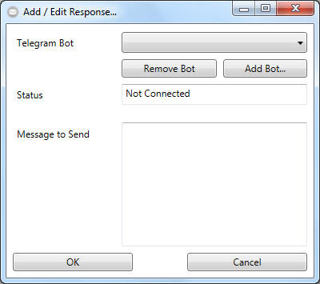

Creating Responses - New Telegram Instant Message

- To setup this feature, you need to select a valid "Telegram Bot" from
the dropdown menu or start
adding one.
- Specify the message that should be send to all reciepents. You could
make use of placeholders that will be replaced in the following manner:
You could use the following placeholders:
'$lockname' = will be replaced by the name of the lock on which the event
has been arised
'$lockphi' = ... by the serialnumber (phi) of the lock ...
'$transpondername' = ... by the name of the transponder owner ...
'$transponderphi' = ... and its phi ...
'$datetime' = ... by the time, the event has been received from the
EventMessenger
'$accessresult' ... by the result of the particular event (e.g. access
granted)
If you leave this blank, a default Message weill be send in english.
BE AWARE: Availability of placeholders is bound to the event type. A
doormonitoring event for example doesnt know anything about the transponder
owner. With that said, $transpondername and $transponderphi will be replaced
with "$dontcare" if used in an doormonitoring event.
- Click on "OK" to complete the telegram message configuration.